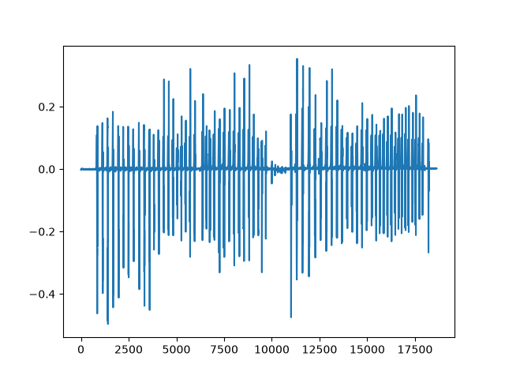
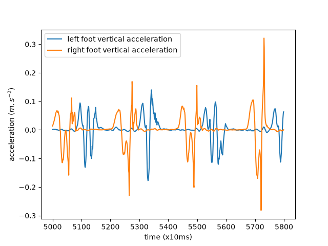
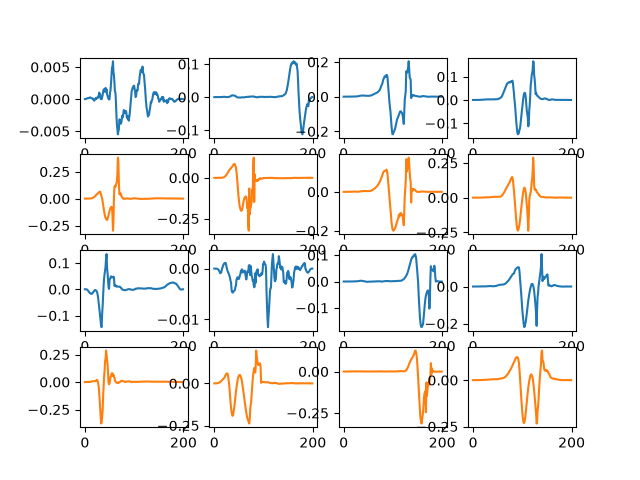
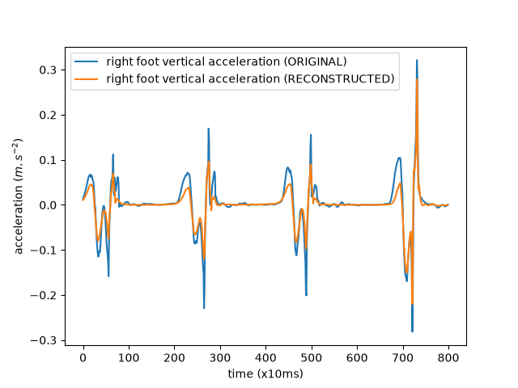
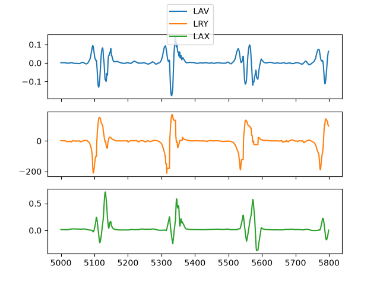
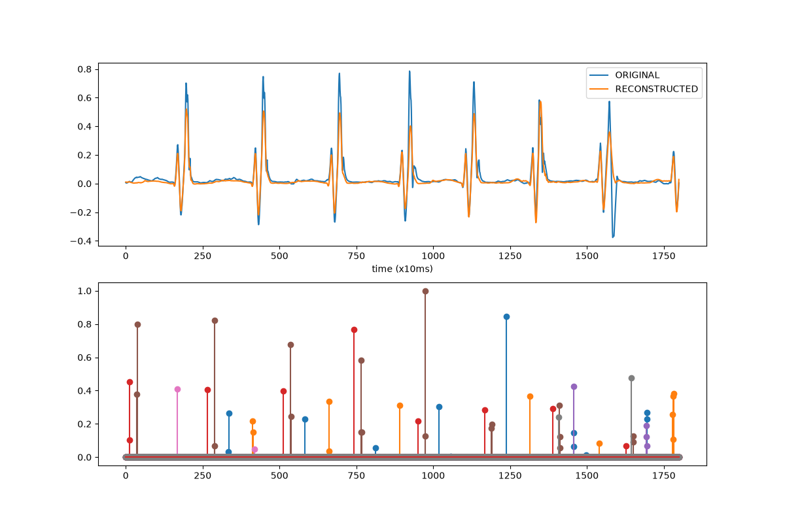

Note
Go to the end to download the full example code.
Gait (steps) example#
In this example, we use DiCoDiLe on an open dataset of gait (steps) IMU time-series to discover patterns in the data. We will then use those to attempt to detect steps and compare our findings with the ground truth.
import matplotlib.pyplot as plt
import numpy as np
# Retrieve trial data
Downloading data from http://dev.ipol.im/~truong/GaitData.zip (192.3 MB)
file_sizes: 0%| | 0.00/202M [00:00<?, ?B/s]
file_sizes: 0%| | 24.6k/202M [00:00<18:31, 181kB/s]
file_sizes: 0%| | 49.2k/202M [00:00<18:34, 181kB/s]
file_sizes: 0%| | 106k/202M [00:00<11:33, 290kB/s]
file_sizes: 0%| | 221k/202M [00:00<06:37, 507kB/s]
file_sizes: 0%| | 319k/202M [00:00<05:44, 584kB/s]
file_sizes: 0%| | 549k/202M [00:00<03:31, 952kB/s]
file_sizes: 0%| | 745k/202M [00:00<03:00, 1.12MB/s]
file_sizes: 1%|▏ | 1.20M/202M [00:01<01:50, 1.82MB/s]
file_sizes: 1%|▏ | 1.60M/202M [00:01<01:35, 2.10MB/s]
file_sizes: 1%|▎ | 2.25M/202M [00:01<01:06, 2.98MB/s]
file_sizes: 2%|▍ | 3.04M/202M [00:01<00:51, 3.83MB/s]
file_sizes: 2%|▌ | 4.48M/202M [00:01<00:33, 5.88MB/s]
file_sizes: 3%|▊ | 6.05M/202M [00:01<00:25, 7.57MB/s]
file_sizes: 4%|█▏ | 8.94M/202M [00:01<00:16, 11.6MB/s]
file_sizes: 6%|█▌ | 11.6M/202M [00:02<00:13, 13.9MB/s]
file_sizes: 7%|█▉ | 14.7M/202M [00:02<00:11, 16.4MB/s]
file_sizes: 9%|██▎ | 17.3M/202M [00:02<00:10, 17.4MB/s]
file_sizes: 10%|██▋ | 19.9M/202M [00:02<00:10, 17.9MB/s]
file_sizes: 11%|███ | 23.1M/202M [00:02<00:09, 19.2MB/s]
file_sizes: 13%|███▍ | 25.7M/202M [00:02<00:09, 19.3MB/s]
file_sizes: 14%|███▊ | 28.9M/202M [00:02<00:08, 19.5MB/s]
file_sizes: 16%|████▎ | 32.0M/202M [00:03<00:08, 20.3MB/s]
file_sizes: 17%|████▋ | 35.2M/202M [00:03<00:08, 20.4MB/s]
file_sizes: 19%|█████▏ | 38.3M/202M [00:03<00:07, 20.8MB/s]
file_sizes: 20%|█████▍ | 40.9M/202M [00:03<00:07, 20.4MB/s]
file_sizes: 22%|█████▉ | 44.1M/202M [00:03<00:07, 20.9MB/s]
file_sizes: 23%|██████▎ | 46.7M/202M [00:03<00:07, 20.5MB/s]
file_sizes: 24%|██████▌ | 49.3M/202M [00:03<00:07, 20.2MB/s]
file_sizes: 26%|███████ | 52.5M/202M [00:04<00:07, 20.7MB/s]
file_sizes: 27%|███████▎ | 55.1M/202M [00:04<00:07, 20.3MB/s]
file_sizes: 29%|███████▊ | 58.2M/202M [00:04<00:06, 20.8MB/s]
file_sizes: 30%|████████▏ | 60.8M/202M [00:04<00:06, 20.3MB/s]
file_sizes: 31%|████████▍ | 63.5M/202M [00:04<00:06, 20.2MB/s]
file_sizes: 33%|████████▉ | 66.6M/202M [00:04<00:06, 20.7MB/s]
file_sizes: 34%|█████████▎ | 69.2M/202M [00:04<00:07, 18.9MB/s]
file_sizes: 36%|█████████▋ | 72.1M/202M [00:05<00:06, 19.4MB/s]
file_sizes: 37%|██████████ | 74.7M/202M [00:05<00:06, 19.4MB/s]
file_sizes: 39%|██████████▍ | 77.9M/202M [00:05<00:06, 20.1MB/s]
file_sizes: 40%|██████████▊ | 80.5M/202M [00:05<00:06, 19.8MB/s]
file_sizes: 41%|███████████▏ | 83.6M/202M [00:05<00:05, 20.5MB/s]
file_sizes: 43%|███████████▌ | 86.3M/202M [00:05<00:05, 20.0MB/s]
file_sizes: 44%|███████████▉ | 89.4M/202M [00:05<00:05, 20.4MB/s]
file_sizes: 46%|████████████▍ | 92.6M/202M [00:06<00:05, 20.9MB/s]
file_sizes: 47%|████████████▋ | 95.2M/202M [00:06<00:05, 20.5MB/s]
file_sizes: 49%|█████████████▏ | 98.3M/202M [00:06<00:04, 20.8MB/s]
file_sizes: 50%|██████████████ | 101M/202M [00:06<00:04, 20.4MB/s]
file_sizes: 52%|██████████████▍ | 104M/202M [00:06<00:04, 20.8MB/s]
file_sizes: 53%|██████████████▊ | 107M/202M [00:06<00:04, 20.4MB/s]
file_sizes: 54%|███████████████▎ | 110M/202M [00:06<00:04, 20.9MB/s]
file_sizes: 56%|███████████████▌ | 112M/202M [00:06<00:04, 20.5MB/s]
file_sizes: 57%|████████████████ | 116M/202M [00:07<00:04, 20.9MB/s]
file_sizes: 59%|████████████████▍ | 118M/202M [00:07<00:04, 20.5MB/s]
file_sizes: 60%|████████████████▊ | 121M/202M [00:07<00:03, 20.8MB/s]
file_sizes: 62%|█████████████████▏ | 124M/202M [00:07<00:03, 20.5MB/s]
file_sizes: 63%|█████████████████▌ | 127M/202M [00:07<00:03, 20.3MB/s]
file_sizes: 64%|██████████████████ | 130M/202M [00:07<00:03, 20.7MB/s]
file_sizes: 66%|██████████████████▍ | 132M/202M [00:07<00:03, 20.3MB/s]
file_sizes: 67%|██████████████████▊ | 136M/202M [00:08<00:03, 20.8MB/s]
file_sizes: 69%|███████████████████▏ | 138M/202M [00:08<00:03, 20.5MB/s]
file_sizes: 70%|███████████████████▌ | 141M/202M [00:08<00:03, 20.1MB/s]
file_sizes: 71%|███████████████████▉ | 144M/202M [00:08<00:02, 20.6MB/s]
file_sizes: 73%|████████████████████▎ | 147M/202M [00:08<00:02, 20.3MB/s]
file_sizes: 74%|████████████████████▊ | 150M/202M [00:08<00:02, 20.7MB/s]
file_sizes: 76%|█████████████████████▏ | 152M/202M [00:08<00:02, 20.3MB/s]
file_sizes: 77%|█████████████████████▌ | 155M/202M [00:09<00:02, 20.8MB/s]
file_sizes: 78%|█████████████████████▉ | 158M/202M [00:09<00:02, 20.4MB/s]
file_sizes: 80%|██████████████████████▍ | 161M/202M [00:09<00:01, 20.9MB/s]
file_sizes: 81%|██████████████████████▊ | 164M/202M [00:09<00:01, 20.5MB/s]
file_sizes: 83%|███████████████████████ | 166M/202M [00:09<00:01, 20.2MB/s]
file_sizes: 84%|███████████████████████▋ | 170M/202M [00:09<00:01, 20.0MB/s]
file_sizes: 86%|████████████████████████ | 174M/202M [00:09<00:01, 20.8MB/s]
file_sizes: 88%|████████████████████████▌ | 177M/202M [00:10<00:01, 21.1MB/s]
file_sizes: 89%|████████████████████████▉ | 179M/202M [00:10<00:01, 20.6MB/s]
file_sizes: 90%|█████████████████████████▎ | 182M/202M [00:10<00:00, 20.9MB/s]
file_sizes: 92%|█████████████████████████▋ | 185M/202M [00:10<00:00, 20.5MB/s]
file_sizes: 93%|██████████████████████████▏ | 188M/202M [00:10<00:00, 20.9MB/s]
file_sizes: 95%|██████████████████████████▌ | 191M/202M [00:10<00:00, 20.5MB/s]
file_sizes: 96%|██████████████████████████▉ | 194M/202M [00:10<00:00, 20.9MB/s]
file_sizes: 98%|███████████████████████████▍| 197M/202M [00:11<00:00, 21.2MB/s]
file_sizes: 99%|███████████████████████████▋| 200M/202M [00:11<00:00, 20.3MB/s]
file_sizes: 100%|████████████████████████████| 202M/202M [00:11<00:00, 17.9MB/s]
Successfully downloaded file to /github/home/data/dicodile/gait/GaitData.zip
Let’s have a look at the data for one trial.
trial.keys()
dict_keys(['Subject', 'Trial', 'Code', 'Age', 'Gender', 'Height', 'Weight', 'BMI', 'Laterality', 'Sensor', 'WalkedDistance', 'WalkingSpeed', 'PathologyGroup', 'IsControl', 'LeftFootActivity', 'RightFootActivity', 'data'])
We get a dictionary whose keys are metadata items, plus a ‘data’ key that contains a numpy array with the trial time series for each sensor axis, at 100 Hz resolution.

[<matplotlib.lines.Line2D object at 0x7fc4eb67bed0>]
Let’s look at a small portion of the series for both feet, overlaid on the same plot.
fig, ax = plt.subplots()
ax.plot(trial['data']['LAV'][5000:5800],
label='left foot vertical acceleration')
ax.plot(trial['data']['RAV'][5000:5800],
label='right foot vertical acceleration')
ax.set_xlabel('time (x10ms)')
ax.set_ylabel('acceleration ($m.s^{-2}$)')
ax.legend()

<matplotlib.legend.Legend object at 0x7fc4eb1a8ad0>
We can see the alternating left and right foot movements.
In the rest of this example, we will only use the right foot vertical acceleration.
# Convolutional Dictionary Learning
Now, let’s use “dicodile” as solver_z to learn patterns from the data and reconstruct the signal from a sparse representation.
First, we initialize a dictionary from parts of the signal:
(1, 1, 18639)
Note the use of reshape to shape the signal as per alphacsc requirements: the shape of the signal should be (n_trials, n_channels, n_times). Here, we have a single-channel time series so it is (1, 1, n_times).
from alphacsc.init_dict import init_dictionary
# set dictionary size
n_atoms = 8
# set individual atom (patch) size.
n_times_atom = 200
D_init = init_dictionary(X,
n_atoms=8,
n_times_atom=200,
rank1=False,
window=True,
D_init='chunk',
random_state=60)
print(D_init.shape)
""
from alphacsc import BatchCDL
cdl = BatchCDL(
# Shape of the dictionary
n_atoms,
n_times_atom,
rank1=False,
uv_constraint='auto',
# Number of iteration for the alternate minimization and cvg threshold
n_iter=3,
# number of workers to be used for dicodile
n_jobs=4,
# solver for the z-step
solver_z='dicodile',
solver_z_kwargs={'max_iter': 10000},
window=True,
D_init=D_init,
random_state=60)
res = cdl.fit(X)
""
from dicodile.utils.viz import display_dictionaries
D_hat = res._D_hat
fig = display_dictionaries(D_init, D_hat)

(8, 1, 200)
Started 4 workers in 2.09s
[BatchCDL] CD iterations 0 / 3
[BatchCDL] lambda = 2.658e+00
[BatchCDL] Objective (z) : 4.270e+03 (sparsity: 3.010e-03)
[BatchCDL] Resampled atom 0
[BatchCDL] Objective (d) : 3.674e+03
[BatchCDL] CD iterations 1 / 3
[BatchCDL] Objective (z) : 3.401e+03 (sparsity: 3.308e-03)
[BatchCDL] Resampled atom 1
[BatchCDL] Objective (d) : 3.323e+03
[BatchCDL] CD iterations 2 / 3
[BatchCDL] Objective (z) : 3.219e+03 (sparsity: 3.308e-03)
[BatchCDL] Resampled atom 5
[BatchCDL] Objective (d) : 3.153e+03
[BatchCDL] Fit in 11.5s
# Signal reconstruction
Now, let’s reconstruct the original signal.
from alphacsc.utils.convolution import construct_X_multi
z_hat = res._z_hat
X_hat = construct_X_multi(z_hat, D_hat)
Plot a small part of the original and reconstructed signals
fig_hat, ax_hat = plt.subplots()
ax_hat.plot(X[0][0][5000:5800],
label='right foot vertical acceleration (ORIGINAL)')
ax_hat.plot(X_hat[0][0][5000:5800],
label='right foot vertical acceleration (RECONSTRUCTED)')
ax_hat.set_xlabel('time (x10ms)')
ax_hat.set_ylabel('acceleration ($m.s^{-2}$)')
ax_hat.legend()

<matplotlib.legend.Legend object at 0x7fc4d0b28b90>
Check that our representation is indeed sparse:
np.int64(488)
Besides our visual check, a measure of how closely we’re reconstructing the original signal is the (normalized) cross-correlation. Let’s compute this:
np.correlate(X[0][0], X_hat[0][0]) / np.sqrt(
np.correlate(X[0][0], X[0][0]) * np.correlate(X_hat[0][0], X_hat[0][0])
)
array([0.9828021])
# Multichannel signals
DiCoDiLe works just as well with multi-channel signals. The gait dataset contains 16 signals (8 for each foot), in the rest of this tutorial, we’ll use three of those.
# Left foot Vertical acceleration, Y rotation and X acceleration
channels = ['LAV', 'LRY', 'LAX']
Let’s look at a small portion of multi-channel data

<matplotlib.legend.Legend object at 0x7fc4d0a34a50>
Let’s put the data in shape for alphacsc: (n_trials, n_channels, n_times)
X_mc_subset = trial['data'][channels].to_numpy().T
X_mc_subset = X_mc_subset.reshape(1, *X_mc_subset.shape)
print(X_mc_subset.shape)
(1, 3, 18639)
Initialize the dictionary (note that the call is identical to the single-channel version)
D_init_mc = init_dictionary(
X_mc_subset, n_atoms=8, n_times_atom=200, rank1=False,
window=True, D_init='chunk', random_state=60
)
print(D_init_mc.shape)
(8, 3, 200)
And run DiCoDiLe (note that the call is identical to the single-channel version here as well)
from alphacsc import BatchCDL
cdl = BatchCDL(
# Shape of the dictionary
n_atoms,
n_times_atom,
rank1=False,
uv_constraint='auto',
# Number of iteration for the alternate minimization and cvg threshold
n_iter=3,
# number of workers to be used for dicodile
n_jobs=4,
# solver for the z-step
solver_z='dicodile',
solver_z_kwargs={'max_iter': 10000},
window=True,
D_init=D_init_mc,
random_state=60)
res = cdl.fit(X_mc_subset)
Started 4 workers in 2.11s
[BatchCDL] CD iterations 0 / 3
[BatchCDL] lambda = 3.191e+00
[BatchCDL] Objective (z) : 7.983e+03 (sparsity: 5.437e-03)
[BatchCDL] Objective (d) : 7.597e+03
[BatchCDL] CD iterations 1 / 3
[BatchCDL] Objective (z) : 7.473e+03 (sparsity: 4.305e-03)
[BatchCDL] Objective (d) : 7.436e+03
[BatchCDL] CD iterations 2 / 3
[BatchCDL] Objective (z) : 7.404e+03 (sparsity: 3.911e-03)
[BatchCDL] Objective (d) : 7.376e+03
[BatchCDL] Fit in 13.6s
# Signal reconstruction (multichannel)
Now, let’s reconstruct the original signal
from alphacsc.utils.convolution import construct_X_multi
z_hat_mc = res._z_hat
D_hat_mc = res._D_hat
X_hat_mc = construct_X_multi(z_hat_mc, D_hat_mc)
Let’s visually compare a small part of the original and reconstructed signal along with the activations.
z_hat_mc.shape
""
viz_start_idx = 4000
viz_end_idx = 5800
viz_chan = 2
max_abs = np.max(np.abs(z_hat_mc), axis=-1)
max_abs = max_abs.reshape(z_hat_mc.shape[1], 1)
z_hat_normalized = z_hat_mc / max_abs
fig_hat_mc, ax_hat_mc = plt.subplots(2, figsize=(12, 8))
# plot original and constructed
ax_hat_mc[0].plot(X_mc_subset[0][viz_chan][viz_start_idx:viz_end_idx],
label='ORIGINAL')
ax_hat_mc[0].plot(X_hat_mc[0][viz_chan][viz_start_idx:viz_end_idx],
label='RECONSTRUCTED')
ax_hat_mc[0].set_xlabel('time (x10ms)')
ax_hat_mc[0].legend()
# plot activations
for idx in range(z_hat_normalized.shape[1]):
ax_hat_mc[1].stem(z_hat_normalized[0][idx][viz_start_idx:viz_end_idx],
linefmt=f"C{idx}-",
markerfmt=f"C{idx}o")

Total running time of the script: (0 minutes 39.231 seconds)